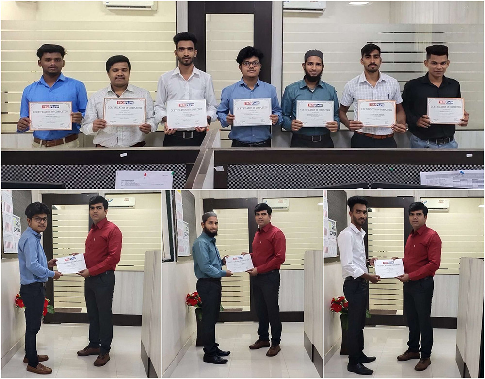
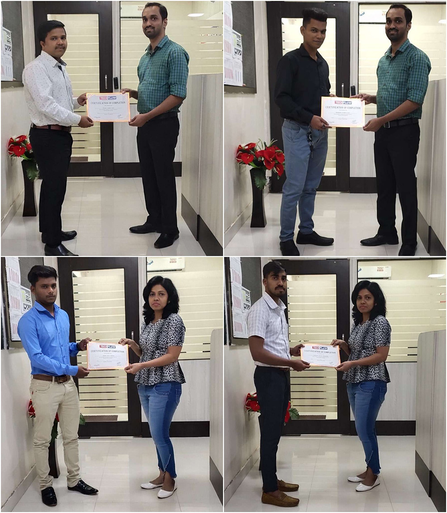

Successful Completion of Tenth Batches of Job Oriented Course Venue : Ratnagiri. | Published On : 10 January 2020.
Just like our previous batches, the tenth batch of CCSSD was also successfully completed by Techflow.
All the trainees of this batch are now employed in Techflow-Ratnagiri as members of execution team.
Our next batches have already started in Mumbai, Kolhapur & Nashik.
Jalgaon batch will commence in couple of weeks' time.
For latest news & updates about current and future batches, refer our next batch news.
For Qualification, Admission criteria & other details about this 3 months duration job oriented 'Certificate Course in Structural Steel Detailing' (CCSSD), click here

